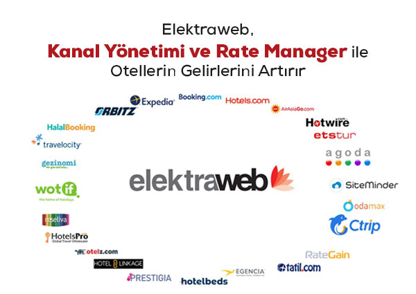

Anasayfa
Üstünlükleri Nelerdir
(current)
Modülleri
İletişim

Üstünlükleri nelerdir?
Esnek yapı sayesinde her işletmeye göre adaptasyon yapılması mümkündür.
İlgili modüller entegre yapıdadır. Böylece tekrarlanan veri girişleri ortadan kalkar, zaman ve emekten tasarruf sağlanır.
Öğrenmesi kolay, kullanımı pratiktir. Pek çok işlem klavye üzerinden kısa yol tuşlarıyla yapılabilmekte, fare kullanımı asgariye inmektedir.
Raporlama sistemi çok gelişmiştir. Sınırsız sayıda ve istenilen formatta (excele, kağıda veya web ortamına) raporlama yapılabilir.
%80’i teknik olan ekibimiz ile 7 gün 24 saat kesintisiz hizmet verilebilmektedir.
Hizmet verilen sektörlerin değişen ihtiyaçları sürekli izlenmekte ve programlarımız bu doğrultuda sürekli geliştirilmektedir.